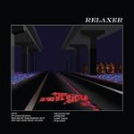

Quick Takes (June 2017)
Welcome to another splendid edition of Quick Takes! We're shaking things up with a bonus write-up, given that regular contributor Joe Marvilli is joining our review fiesta.
This month, Carl easily takes the prize of most enthusiast. He was eager to sing SZA'a praises, and he also gave Marina Hackman a ringing endorsement. As for myself, I rather enjoyed two songwriters who released great second albums with comparatively distinctive styles, Benjamin Booker and H Hawkline. We also were quite passionate about albums we disliked: I am in complete agreement of alt-J's polarizing RELAXER, while I broke the grading curve with Cigarettes After Sex's unquestionably poor debut. And I haven't even mentioned that we both wrote about two major indie favorites, Ride and Fleet Foxes. We're covering all bases this month, people.
What were your favorite albums during the month of June? Anything we didn't get to review on our site that we should've? You can always reach us on facebook, or on our official twitter page. - Juan
...
alt-J
RELAXER
(Infectious)
I’ve listened to this record several times since its release last month, and I’m still undecided as to whether I like it or passionately hate it. Five years ago, Mercury Prize winning debut An Awesome Wave immediately encapsulated with its veiled, fidgety, innuendo ridden troposphere, but on closer inspection, the substance was harder to find beneath the veil. This Is All Yours was nowhere near as immediate and was equal parts intriguing and defective, so I suppose RELAXER must be of the same ilk. Opening track 3WW has the most irritating opening lyric I’ve heard in years, and is decidedly beige to boot. In Cold Blood follows and is excellent, with code-like vocals and a brass-funk cascade drenching a menacing chorus. Hit Me Like That Snare is alt-J flexing their nerdiness, and Deadcrush is great. The final three tracks of the record are painfully boring and terminally so. RELAXER is a beast that will be divisive at best, and I’m going to rate it bang in the middle of outstanding and abhorrent in keeping with that thought. [5/10] Carl Purvis
 Benjamin Booker
Benjamin Booker
Witness
(ATO Records)
Benjamin Booker performs with a giddy recklessness that sounds vital and unmanufactured. Right from the outset, the Virginia Beach singer-songwriter’s modus operandi was to churn out garage bangers that subvert expectations. His self-titled record was all confidence and bluster, a spiked brew of classic rock n’ roll that pushed genre-fied boundaries to its limits but with a soulful core. It was refreshingly directionless, a trait that continues to inform the way in which Booker arranges on his more purposeful follow-up, Witness. Inspired by America’s thorny racial legacy, a checkered composition of past and present that impacted his viewpoint after taking a retreat to Mexico, Booker took it upon himself to insert some of his political discontent without tarnishing his more personal accounts. But his unheeded rage is always his primal weapon, an attitude that he modifies depending on the format he’s playing in. From the punk-laced, lunging grievances of Right on You to the soulful optimism of Believe, Witness takes so many sudden tonal contours that it’s sometimes hard to keep up with the album’s overall message. It unveils itself as quick as a flash, but when taken in individual portions, Witness has an unforeseen succinctness that provides some stability to his otherwise nervous excitement. [7/10] Juan Edgardo Rodríguez
 Beth Ditto
Beth Ditto
Fake Sugar
(Myra’s Child)
The songs that make up Beth Ditto’s first solo LP were initially intended for another Gossip album before – to her surprise - her band mate moved back to Arkansas, paving the way for her to go it alone. Ditto has arranged the tracks into a slick, professional record littered with strutting, sequin-daubed stompers, Dusty Springfield-esque southern soul and 70s disco grooves. Of course, Ditto’s mammoth voice is at the forefront of it all, whether it’s matching the swagger of the gritty, blues-stomping Fire, or anxiously delivering a chorus about falling In and Out of love with her wife. The album does well to showcase its punk edge in some of its most angular moments. Ooh La La sharpens that edge with a straight-up shot of soul rock revivalism followed by a chaser of electro-groove. Ditto is at her peak at these moments, where she finds a balance between creativity and sneering attitude, and it would have been great to see more of that, and less of the studio-slick professionalism of the album’s sound. It’s good to have her back, nonetheless. [6/10] Carl Purvis
Cigarettes After Sex
self-titled
(Partisan Records)
A band’s unified visual presentation can sometimes be crucial to their success. And Brooklyn four-piece Cigarettes After Sex sure do a great job with their stark visual aesthetic: there’s an artful tastefulness in how they utilize dimly-lit symbolic motifs to adequately capture a specific mood. But it also proffers a certain anonymity that, one you examine with more detail, leaves a feeling of cold, hollow vacancy. It’d be facile to assume that’s the sensation they’d like to convey, which explores the perilous nature of romance with soul-searching intimacy. But their immaculately-arranged dream pop is also inert and conciliating, a far cry from the truthful reaffirmations it presents, perfectly content with placating to a sound that has no stakes. At once droll and melancholic, Cigarettes After Sex struggles to earn the aural beauty it desperately seeks. [4/10] Juan Edgardo Rodríguez
 Fleet Foxes
Fleet Foxes
Crack-Up
(Sub Pop)
Fleet Foxes have produced a typically intelligent, uncompromising and metamorphosising body of work six years on from their previous LP. In the time that’s elapsed, their former drummer has skyrocketed beyond the band in the public eye in flamboyant fashion, and it’s difficult not to compare Crack-Up with Father John Misty’s Pure Comedy. Both are impressionably self-indulgent and cynical, lacking immediacy and instead shelving it in favour of complex, mostly compelling songwriting that is introverted in its chronology. With Crack-Up, Robin Pecknold’s songcraft manages to expand on itself without increasing the contiguity, instead relying on tidal fluctuations of density. The tracks are as immersive in their sparse moments as they are in their thickset ones, while the wooded harmonies that typify Fleet Foxes help to hallmark and expand the sound in equal measure. This is – as many expected it would be – hugely accomplished in its composition, and while it’s not short of irritating periods of pretension, it’s par for the course when beauty, indulgence and complexity are key ingredients in the melting pot. [7/10] Carl Purvis
 Floating Points
Floating Points
Reflections - Mojave Desert
(Luaka Bop)
As far as concepts go, it doesn’t get any more zealous than choosing to record at the vast, mysterious Mojave Desert. And though it sounds like an unthinkable act of lunacy, that’s precisely what Sam Shepherd did on his latest, Reflections - Mojave Desert. A relatively more low-key approach to his last record, Elaenia, the ambient-leaning Reflections presents a half-hour recording that follows, at least in the beginning, that album’s raw display of jazzy, syncopated rhythms. Reflections is basically composed of two long sequences that are accompanied by its corresponding introductions, both of them noticeably different in tone: while Silurian Blue unfolds with its oscillating synthesizers washes, the propulsive Kelso Dunes starts slowly before it considerably accelerates the pace, Charlie Parker-style, with its combination of breakneck drum work and transcendent sonic tapestry. Reflections may have required a more rigorous process to complete than any other project he’s ever done, but it is also his most compact to date, which rejects the common belief that bigger always means better. [7/10] Juan Edgardo Rodríguez
 H Hawkline
H Hawkline
I Romanticize
(Heavenly Recordings)
H Hawkline continues to embrace a patchwork of possibilities on his second effort, I Romanticize. The Cardiff songwriter’s askew meanderings are carried with a steady balance of oddball psychedelia and pop songcraft, but never to the point where one quality disrupts the other. Hawkline’s effortless persona tends to confuse one into thinking that he’s making a feeble effort to further his craft, but when listed to closely, you realize that they strangely interconnect with an ease that’s more distinguished than workmanlike. And even if it’s not obvious he does take chances, beginning with how he’s broadened his instrumental palette to make sense of his songwriting contradictions. For instance, the spiraling guitar arpeggios of Means That Much have a merry temperament even when his defeatist attitude takes over, while the new wave-leaning Television comes off as a disco jam that’s ripe for people who abhor disco parties. And that’s just a small tasting: I Romanticize bobs around with a collage of springy trinkets that both confound and fascinate, though never without trying to make sense of his eccentric impulses. [8/10] Juan Edgardo Rodríguez
 London Grammar
London Grammar
Truth Is a Beautiful Thing
(Columbia)
Four years after their stunning debut, London Grammar has returned with Truth Is a Beautiful Thing. For this follow-up, the three-piece doubles down on everything that worked last time around. Hannah Reid's voice hits higher peaks and holds notes longer, especially on the jaw-dropping Rooting For You. Dot Major and Dan Rothman create ambient soundscapes that gently spread outward like a leaf hitting the water. For this band, it's all about the little touches. There's the echoing guitar on Big Picture, the shuffling beat on Hell to the Liars and the wall of backing vocals on Bones of Ribbon. It's these aspects working in sync that makes London Grammar's music so powerful. If there's any downside, it's that their sophomore album doesn't do anything to distinguish itself from its predecessor. But you know what? When you write songs that are just as strong as your past work, evolution is less of a necessity. If it's not broken, don't fix it. [7/10] Joe Marvilli
 Marika Hackman
Marika Hackman
I'm Not Your Man
(Sub Pop)
The Marika Hackman of I’m Not Your Man is almost unrecognisable from the spectral, tangling folk of her unsettling debut, We Slept at Last. Replacing her is a direct, comparatively feral version, favouring an arsenal of seductive grunge guitars, prowling sultriness and a Wolf Alice-like brand of constricting noise. Like the latter’s debut LP, I’m Not Your Man is the musical equivalent of a wolf pup: sweet, adorable and fluffy with an insatiable desire to rip your throat out. Her vocal delivery still dazzles with its sweet, piercing drawl, but the sulking guitar tones create a beautiful juxtaposition. The only real bridge from the Hackman of two years ago is the acoustic tangle of Cigarette – a razor-sharp tongued ode that creates a stripped-back but incisive moment in the album, but throughout, I’m Not Your Man is a meandering undercurrent of predatory slyness, advancing with a slack but completely controlled swagger. [8/10] Carl Purvis
Ride
Weather Diaries
(Wichita Recordings)
When considering the small pocket of pioneering shoegaze bands, Ride were always the outliers. The Oxford four piece arguably wrote that movement's definitive statement with their debut effort, Nowhere, but subsequent efforts proved that their songwriting inclinations were far more comprehensive than they initially led to believe. On Weather Diaries, their return to an album format after a twenty-year hiatus, Ride touches on the more forceful side of dream pop with a new coat of paint. Brisk, hook-filled songs like Charm Assault and All I Want harken back to their beginnings, given that their sweeping melodies are good evidence of how they always preferred to follow a tuneful immediacy rather than taking their songs in a more ambient direction. But it also considers the past, as the drifting title track and Impermanence sound as if the band is making amends with those who always thought they were at their best when at their most hypnotic. Some of Weather Diaries sounds a bit thin, as the album's vibrant singles come off as outdated recreations of old songs with some unnecessary polish. It isn’t short of ideas, though, which suggests that Ride are on their way to better refining their latest chapter. [6/10] Juan Edgardo Rodríguez
 SZA
SZA
Ctrl
(Top Dawg Entertainment)
SZA’s debut record has been long-awaited, and it arrives as a showcase of an incredibly accomplished talent who glides between narratives and dreamscapes with consummate ease. Making the point that she operates outside the indicative boundaries of her R&B sphere isn’t so much a cliché but a redundant statement in 2017, but the opulent touchstones she weaves her streams of consciousness around mean it’s a point that needs to be stressed in this case. It’s a Frank Ocean- level exploring of her own environment, and even when you take the supremely confident wordplay out of the equation, the soundscapes are irresistible in themselves. Opening track Supermodel is stripped-back from the outset with a reclusive guitar riff, and the gorgeously mixed tracks that follow only serve to enhance the arrangement as the record progresses. SZA is alarmingly frank with her tongue, too, and never afraid to hold back on the details. Supermodel is a great tale of revenge for a Valentine’s Day jilt, but she always remains in touch with love’s delicacies and intimacies amongst her tales of bedroom bravado. Ctrl is a languid, cavernously soulful debut that is never anything but assured – a collection of delicious jams that are equal parts fragile, cozy and piercing. [8/10 – Believe The Hype] Carl Purvis
18 July, 2017 - 18:31 — No Ripcord Staff